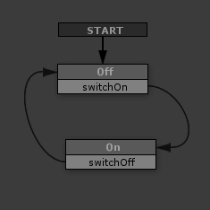

This example shows an FSM designed to control a simple switch.
We won't get into specific Actions yet since we're focused more on the FSM Diagram here, but there are lots of actions to look forward to!
FSM Diagram:

Start:
- The START event activates the Off state.
Off:
- The Off state performs the switch's Off Actions (E.g., turn off a light).
- The Off state responds to one event: switchOn.
- The switchOn event triggers a transition to the On state.
On:
- The On state performs the switch's On Actions (E.g., turn on a light).
- The On state responds to one event: switchOff.
- The switchOff event triggers a transition to the Off state.
This is rather long winded description of the FSM's behavior - once you learn to read FSM diagrams you'll find that a picture really is worth a thousand words!
Notes:
Even in this simple example you can see some cool properties of state machines:
- The states and events are plain English descriptions.
- At a glance you can see how many states an object has.
- You can quickly see all the events that control its behavior.
While this is great for a developer looking at this FSM, it's also great for other FSMs looking at this FSM!
You're not just defining object behaviors but a way for objects to understand each other.